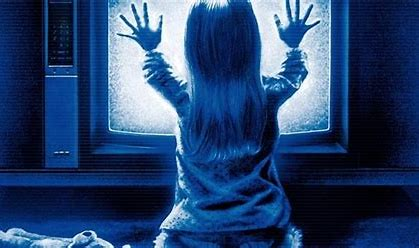

TIPOS DE ENTIDADES
| POLTERGEIST |
Proviene del alemán y se traduce como "espíritu ruidoso" (poltern=hacer ruido, Geist=espíritu). Se refiere a un fenómeno supuestamente paranormal en el que se cree que un espíritu o entidad invisible causa disturbios físicos en un lugar, como: Objetos que se mueven solos, Ruidos fuertes (golpes, pasos, muebles arrastrandose), Luces que se apagan o encienden sin razón, puertas que se abren o cierran solas. |
 |
| GENTE SOMBRA |
Es un fenómeno descrito por muchas personas que aseguran ver figuras oscuras con forma humana, generalmente en su visión periférica, o durante episodios de parálisis del sueño. Estas figuras suelen parecer: Sombras negras sin rasgos faciales, altas y delgadas, a veces con sombrero u ojos rojos brillantes (según algunas descripciones o testimonios de personas). |
 |
| FANTASMAS RESIDUALES |
No son espíritus conscientes. Se cree que son energías del pasado que se quedaron grabadas del pasado que se quedaron grabadas en un lugar (como si fuera una grabación).Sueles tener las siguientes características: No interactúan con los vivos, repiten siempre la misma acción, no tiene conciencia de estar muertos, se cree que son causados por eventos intensos(emociones fuertes, muertes violentas, rutinas muy repetidas). |
 |
| FANTASMAS DE PERSONAS FALLECIDAS |
Se cree que son los espíritus conscientes de personas que murieron, pero que no han trascendido o pasado "al otro lado". Características:Mueven cosas, se comunican a través de sueños, a veces buscan ayuda para descansar en paz.> |
 |